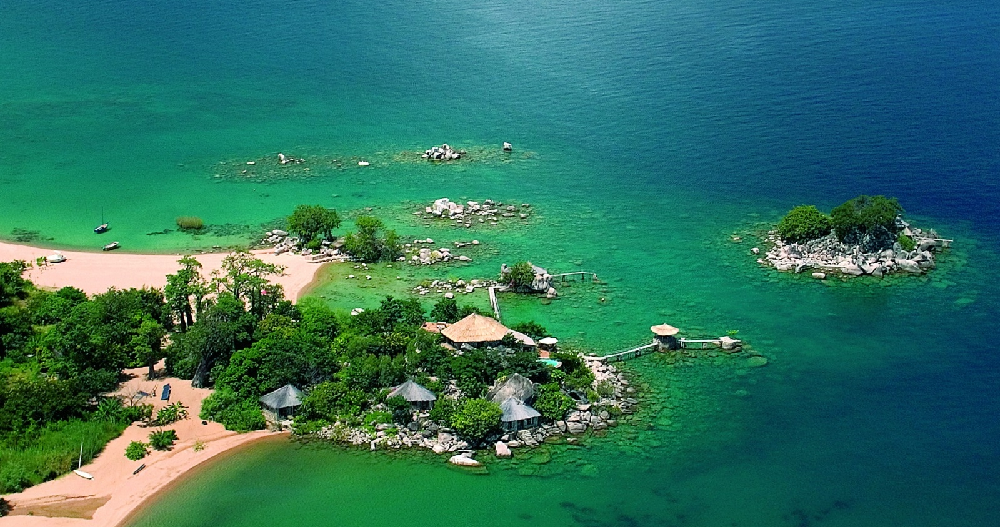
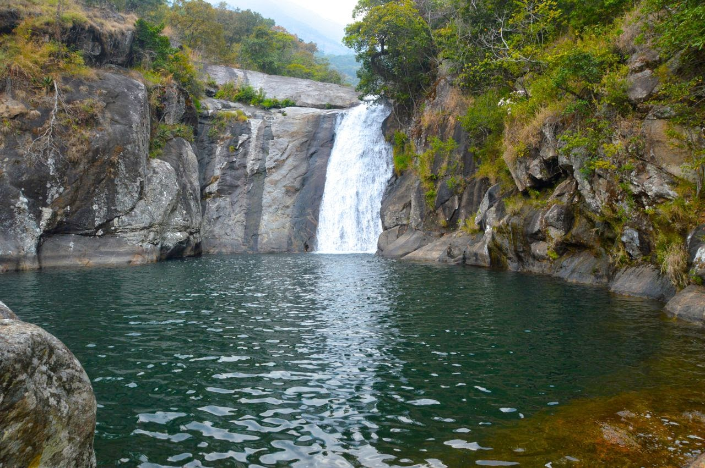

Malawi is a former colony of Britain in cetral eastern Africa, then called Nyasaland Nyasa sounds like Nyanja, lake in English. And the name Malawi means flames in English.
Malawi took her independence on 06th July, 1964, when she was decleared a Republic. 45% of Malawi is water, and main body of water is Lake Malawi. She has more than ten tribes, and four main tribes are: chewa tribe, yao tribe, tumbuka tribe and lomwe tribe.
The main language spoken in Malawi is Chichewa and for scholar is English. Nsima is the main food for Malawians. And Tilapia of Lake Malawi which is locally known as CHAMBO is the pride of Malawi in its taste as it is the best of the world Tilapia you can find.
Each tribe in Malawi is known by its language and culture. This made Malawi to be rich of langauges and cultures.
Malawi is also known by its wildlife and has five main wild reserve across the country, and the biggest of them all is Nyika National Park, located in the Northern part of Malawi, and the most worderful is Lake Malawi National Park in the southeastern part. The animals you can find in the country's game reserves are like lions, leopards, elephants, hippos, hynas, eagles, fish and many more.
In Lake Malawi the country has so many beautiful Islands that people go and visit; but the main Island of them, which is also a well known historical place in ht country is Likoma Island in the Northern part of the Lake. It is the biggest Island of the all, and is well known because of the history of the missionaries who came there and helped to end slave trade in Eastern Africa.

Some part of Likoma Island

Mulange Mountain